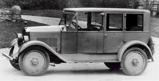
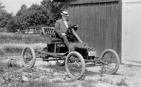

იცოდით, რომ ელექტრომობილები უფრო ადრე გამოიგონეს, ვიდრე ბენზინისა და დიზელზე მომუშავე ავტომობილები?
ელექტრო ავტომობილების პოპულარობა დღესდღეობით იგივე მიზეზებით იზრდება, რა მიზეზებითაც ისინი პოპულარულები გახდნენ 100 წლის წინ, ამ სტატიაში გაგაცნობთ ელექტრომობილების დაბადებისა და განვითარების ეტაპებს და მნიშვნელოვან ფაქტებს.მე-19 საუკუნის დასაწყისში უნგრეთში, ნიდერლანდებსა და ამერიკაში გამომგონებლებმა დაიწყეს მუშაობა ბატარეაზე მომუშავე მანქანაზე და შექმნეს ელექტრო მანქანის პატარა მოდელი.
ამავე პერიოდში ბრიტანელმა გამომგონებელმა რობერტ ანდერსონმა შექმნა პირველი ნედლი ელექტროგადამცემი, ხოლო მე-19 საუკუნის მეორე ნახევარში ფრანგმა და ინგლისელმა გამომგონებლებმა ააგეს პირველი პრაქტიკული ელექტრო ავტომობილი.
1890 წელს ამერიკის შეერთებულ შტატებში უილიამ მორისონის დამსახურებით ელექტრონულ მანქანას ჰქონდა წარმატებული დებიუტი.
მანქანა იტევდა 6 მგზავრს და მისი მაქსიმალური სიჩქარე იყო 14 მილი/საათში.
ამ მოვლენამ გააღვივა ინტერესი ელექტრომობილების მიმართ, შედეგად კი მომდევნო რამდენიმე წლის განმავლობაში ბევრმა სხვადასხვა მწარმოებელმა შექმნა ელექტრომობილები ამერიკის შეერთებულ შტატებში.ელექტრომობილის პოპულარობის ზრდას ხელი შეუწყო მისმა უპირატესობებმა უკვე არსებულ, ტრადიციულ სატრანსპორტო საშუალებებთან შედარებით.
მისი შექმნის პარალელურად, ჯერ კიდევ 1870 წლამდე, არსებობდა ორთქლზე მომუშავე მანქანები, თუმცა პირადი ავტომობილებისთვის ორთქლი არ იყო პრაქტიკული, რადგან ავტომობილს ასამუშავებლად დიდი დრო და წყლით ავსება სჭირდებოდა.
გარდა ამისა, ბაზარზე ელექტრომობილებთან ერთად, ავტომობილების ახალი – ბენზინზე მომუშავე მოდელებიც გამოჩნდნენ, თუმცა ელექტრო მანქანებთან შედარებით მათ სჭირდებოდათ დიდი ძალისხმევა სატარებლად და იყვნენ ზედმეტად ხმაურიანები.
ამ ორი სახის ავტომობილთან შედარებით ელექტრომობილი იყო ჩუმი, მარტივად სამართავი და ეკოლოგიურად სუფთა, ელექტრომობილები სწრაფად გახდა პოპულარული ქალაქის მაცხოვრებლებს შორის, განსაკუთრებით ქალებში. ელექტრო მანქანების პოპულარიზაციას ხელი შეუწყო ელექტრო ენერგიაზე ხელმისაწვდომობის ზრდამ 1910 წლისთვის, რის გამოც მათი დატენვა უფრო ადვილი გახდა.
გამომგონებლებმა სწრაფად აუწყვეს ფეხი ელექტრო მანქანებზე მოთხოვნის ზრდას და ყველანაირად ცდილობდნენ მავტომობილების ტექნოლოგიის გაუმჯობესებას. მაგალითად, 1898 წელს ფერდინანდ პორშემ, რომელიც იყო სპორტული მანქანების კომპანიის დამფუძნებელი, შექმნა ელექტრო მანქანა სახელად „P1“.